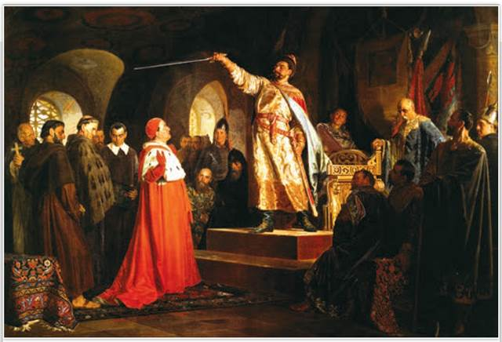
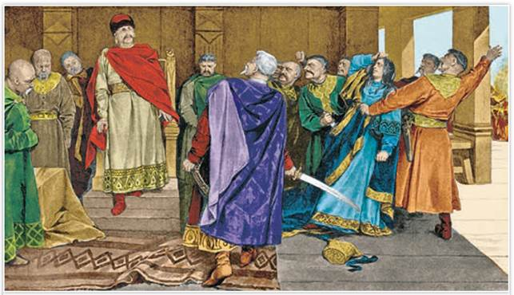
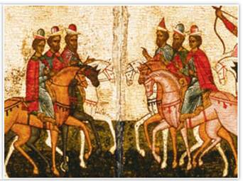

Роман Галицкий принимает послов папы Иннокентия III. Художник Н. Неврев. 1875 г. Национальный художественный музей Республики Беларусь. Минск
Как вы думаете, что могли предлагать послы папы римского Роману Галицкому— одному из самых сильных князей Юго-Западной Руси?
РОССИЯ
МИР
1. Основание Галицкой земли. Плодородные почвы, тёплый климат и полноводные реки, выгодное положение на торговых путях между Западом и Востоком издавна способствовали развитию в Юго-Западной Руси земледелия, промыслов, ремесла, основанию городов.
В период раздробленности на юго-западе выделялись Галицкая и Волынская земли. В XI—XII вв. центром волости Волыни был город Владимир, заложенный ещё в X в. князем Владимиром Святославичем. Волостными центрами также являлись Теребовль, Перемышль, Звенигород.
Когда на русские земли участились набеги половцев, на юго-запад потянулись беженцы. В пограничье Руси, Польши и Венгрии обосновались потомки Ростислава Владимировича — внука Ярослава Мудрого. Они много и успешно воевали с соседями, заселяли свои волости пленниками, захваченными в войнах, принимали переселенцев из Южной Руси, воевали между собой. В 1144 г. победителем в распрях вышел князь Владимир Володаревич. Он и стал основателем династии галицких князей. Его столицей был город Галич, по которому землю называли Галицкой.
2. Княжение Ярослава Осмомысла в Галицкой земле. Расцвет Галицкой земли пришёлся на княжение сына Владимира Володаревича Ярослава Осмомысла (1153—1187). Это был талантливый воитель и дипломат, строитель городов и покровитель торговли. Его прозвище Осмомысл, по одной из версий, означало «знающий восемь языков».
Галицкого князя уважали не только на Руси, но и в Византии, Польше, Венгрии. Подобно князю Святославу Игоревичу, Ярослав Осмомысл занял устье Дуная, контролировал низовья Днестра и Южного Буга. Во внутренней политике он опирался на ближнюю дружину и горожан.
СВИДЕТЕЛЬСТВО ЭПОХИ
Из поэмы «Слово о полку Игореве»
Галицкий Осмомысл Ярослав, высоко сидишь ты на своём златокованом престоле. Подпёр ты горы Венгерские своими железными полками, загородив Королю путь, затворив Дунаю ворота, перемётывая тяжести через облака, наводя суд до Дуная. Грозы твои идут по землям; ты отворяешь Киеву ворота; стреляешь с отцова золотого престола салтанов за странами. Стреляй же, господин, Кончака, поганого половчанина, за землю Русскую, за раны Игоревы, буйного Святославича...
Как автор древнерусской поэмы относится к Ярославу Осмомыслу? Какие сведения о политике Ярослава Осмомысла можно получить из данного отрывка?
Ярослав Осмомысл заботился о процветании своего края. Благодаря торговле с европейскими странами богатели города Галицкой земли. Хорошо укреплённый Галич князь украшал храмами, при дворе жили учёные и монахи-книжники.
Против могущественного Ярослава объединились богатые галицкие бояре. Немалые доходы с вотчин позволяли им держать свои дружины, возводить замки, как у западных феодалов. Часто они выступали против князя. Ярослав вынужден был считаться с их интересами, так как весомую часть военной силы Галицкой земли составляли боярские дружины.
Подробнее. Однажды Ярослав изгнал из Галича жену Ольгу и законного сына Владимира. Наследником он хотел видеть своего внебрачного сына Олега, рождённого от любимой Настасьи. Бояре в своих интересах вступились за Ольгу и Владимира. Ярослава они взяли под стражу, Настасью сожгли заживо на костре, а Олега бросили в темницу. Ярослав обещал уважать законные права Ольги и Владимира. Но выйдя из-под стражи, он в первую очередь приказал перебить обидчиков. Бояре притихли, поклялись, что признают Олега преемником, однако после смерти Ярослава слова своего не сдержали.

Галицкие бояре тащат на костёр Настасью, любимицу князя Ярослава Осмомысла. Художник К. Лебедев. Рубеж XIX—XX вв.
3. Княжение Владимира Ярославича. После смерти Ярослава Осмомысла галицкая знать возвела на престол его законного сына Владимира (1187—1199). С выбором наследника бояре явно промахнулись. Трудно было найти князя более неуёмного в кутежах и совершенно непригодного к государственным делам. Возможно, поэтому Ярослав не видел его своим преемником. Владимир часто пировал, врывался в дома бояр и духовенства, похищал жён и девиц. Он заслужил такую ненависть галичан, что ему пришлось бежать в Венгрию.
Но венгерский король заточил Владимира в шатре, стоявшем на башне. Выход из башни был замурован, еду узник получал в корзине, которую поднимал на верёвке. Венгры захватили Галич и возвели на галицкий трон своего королевича. В грозовую ночь князь Владимир разрезал шатёр на полосы, спустился по ним и бежал к германскому императору Фридриху Барбароссе. Он просил Фридриха за 2 тыс. гривен ежегодной дани вернуть ему родной Галич.
В 1189 г. галицкие бояре приняли Владимира обратно, а венгерского королевича изгнали. Вскоре Владимир, снова не поладив с боярами, уже просил помощи у владимиро-суздальского князя Всеволода Большое Гнездо: «Господине, удержи подо мной Галич...» Княжил Владимир до своей кончины в 1199 г., но при нём померкло могущество Галицкой земли.
4. Галицко-Волынская земля в начале XII в. Наконец своего часа дождался волынский князь Роман Мстиславич (1199—1205), потомок Владимира Мономаха. «Всю жизнь свою в войнах препровождал, многие победы получил, а побеждён был лишь однажды», — писал о нём историк В. Татищев. В 1199 г. смелый и решительный Роман объединил галицкие и волынские земли. При нём Галицко-Волынская земля стала одной из сильнейших на Руси.
Роман влиял на судьбу киевского престола, водил полки на половцев. В 1205 г. он был убит в польских землях, вмешавшись в распри местной знати, а его дети и жена бежали на Волынь.
После гибели Романа Мстиславича Галич долго переходил из рук в руки. Одно время престол в Галиче занимал венгерский принц, провозглашённый папой римским «галицким королём». Его галичане изгнали в 1219 г., пригласив к себе князя Мстислава Удатного, известного на всю Русь своей храбростью и справедливостью.

Чудо от иконы «Знамение». Битва новгородцев и суздальцев в 1170 г. Деталь. Новгородский государственный объединённый музей-заповедник
В 1168 г. новгородцы пригласили к себе на княжение Романа Мстиславича. В 1170 г., когда суздальцы стояли у стен Новгорода, князь возглавлял оборону города. Но после битвы новгородцы «указали путь князю Роману» из города. Об этом факте сообщает Новгородская первая летопись.
Бояре заставили Мстислава завещать Галич венгерскому королевичу, но часть галичан выступила за сына Романа Мстиславича Даниила. Даниил отнял Галич у венгров. Влиятельный и могущественный князь Даниил Галицкий возводил города, укреплял крепостные стены, поощрял каменное строительство и ремесло, успешно торговал с европейскими странами. Целью его политики было укрепление великокняжеской власти и сохранение единой Галицко-Волынской земли. В 1240 г. ему покорился Киев.
ПОДВЕДЁМ ИТОГИ
Галицко-волынским князьям приходилось делиться властью с местным боярством. Тем не менее правители Галицко-Волынской земли были одними из самых могущественных в русских землях.
Вопросы и задания
Работаем с хронологией
Расположите в хронологической последовательности события:
Работаем с источником
Прочитайте фрагмент из книги историка Д. Володихина «Рюриковичи» о Данииле Галицком и ответьте на вопросы.
Бог наделил его [князя Даниила Романовича Галицкого] фантастической энергией и великой отвагой, а мать с отцом научили драться за власть не покладая рук. Он был готов рисковать, идти на авантюры, только бы не упустить лакомые города и области.
Местное (прежде всего галицкое) боярство не желало возвращения Даниила Романовича. Но когда он подрос, соседи — венгры и поляки — сделали его своим ставленником, то есть проводником влияния в галицко-волынских землях. Именно они привели отрока в Галич в 1210 году... откуда его очень скоро вышибли собственные бояре. Очевидно, проводившееся через правителя-юношу иноземное влияние их не устраивало. <...>
Этот человек руководствовался при выборе друзей только одним: текущим политическим интересом. Назавтра он мог поссориться с сегодняшним сторонником и пойти на него войной, послезавтра поддержать недавнего врага, затем попросить у него помощи, а чуть погодя — вновь разорвать союз.
Во второй половине 1220-х годов Даниил Романович принялся методично увеличивать свои владения. Добыл Чарторыйск. Присоединил, наконец, вожделенный Галич, отбил венгров, желавших отобрать этот город. Но... опять его подвела нелюбовь местных бояр. Они предпочитали кого угодно, только не Даниила. Против него строили заговоры, местная знать на время даже отдала Галич венграм, но потом всё-таки вернула его князю...
Лет десять, с середины 1230-х гг., Даниил Романович не слезает с седла. Он воюет без конца, то сокрушая противников, то уступая им. Как полководец он добивается громкой заслуженной славы. Делом его непрестанной заботы становится укрепление городских стен: Галицко-Волынская земля сделалась проходным двором для чужих войск. И только мощные крепостные сооружения могли спасти богатые местные города от вражеских жадных рук.
ДОПОЛНИТЕЛЬНЫЕ МАТЕРИАЛЫ
«УЧИТЕЛЮ И УЧЕНИКУ».
Материалы к параграфу на портале История.РФ.